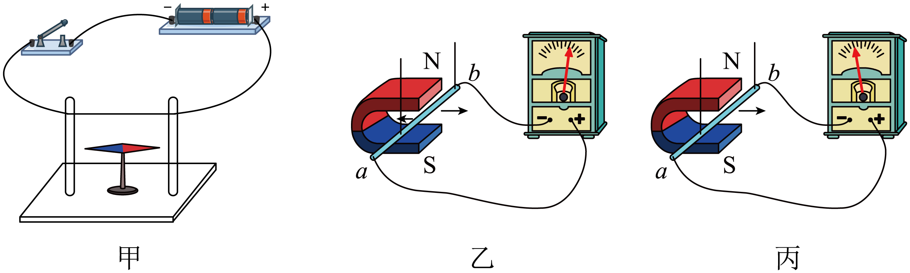

2023年北京中考物理 第20题20. （1）小京用图甲所示的装置进行实验，闭合开关的瞬间，观察到小磁针______的现象，说明电流周围存在磁场；（2）小京用图乙所示的装置进行实验，其中灵敏电流计指针偏转的方向可以反映电路中的电流方向。使金属棒ab向左做切割磁感线运动，灵敏电流计指针向右偏转，如图乙所示；保持磁场方向不变，使金属棒ab向右做切割磁感线运动，灵敏电流计指针向左偏转，如图丙所示。小京探究的问题是：______。